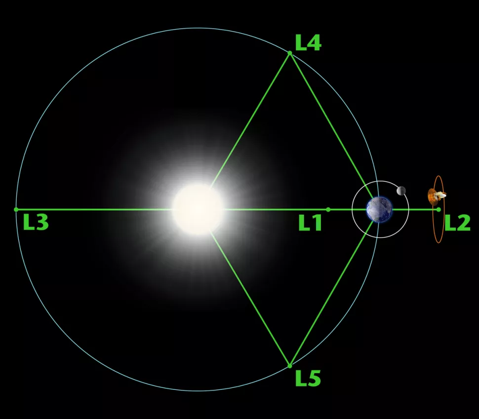
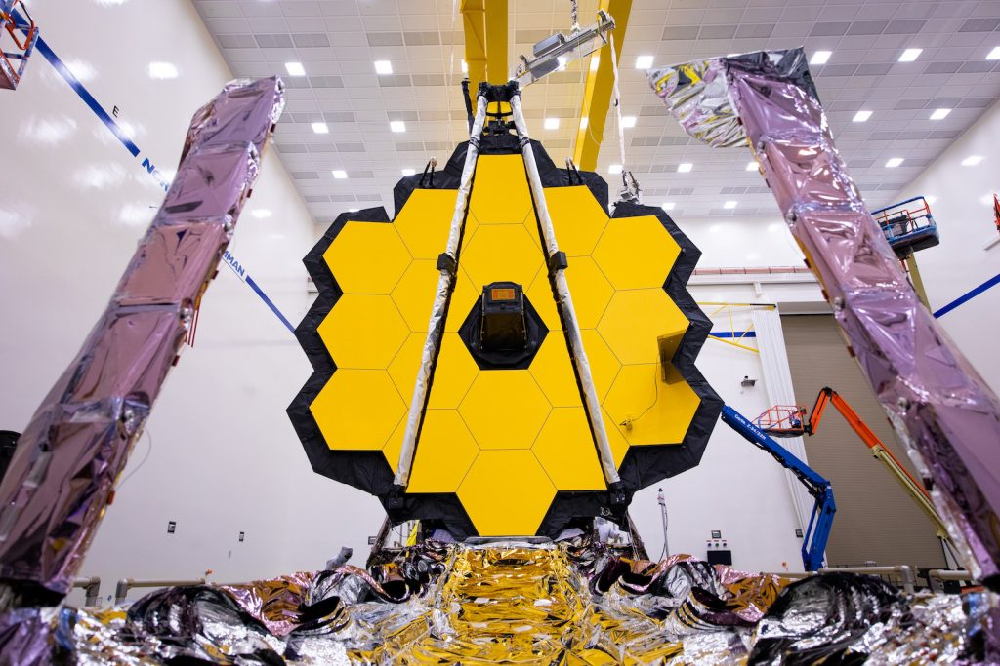
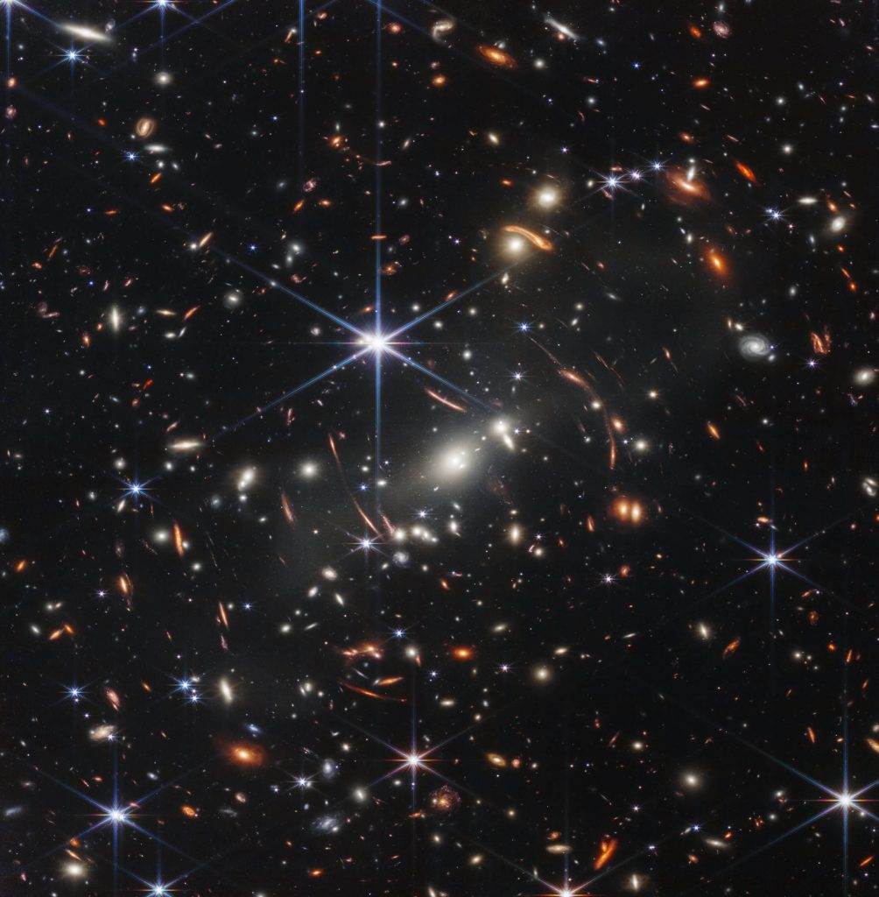

အခု အဆက်အသွယ် ပြတ်တောက်သွားတဲ့ ကင်မရာဟာ ဂျိမ်းစ်ဝက်ဘ် ရဲ့ Near Infrared Imager and Slitless Spectrograph (NIRISS) ကင်မရာ ဖြစ်ပါတယ်။ ဒီ ကင်မရာ ဟာ အနီအောက် ရောင်ခြည် လှိုင်းခွင်မှာ အနီး အနီအောက်ရောင်ခြည် ခွင်ကို ဖမ်းယူတဲ့ ကင်မရာ ဖြစ်ပါတယ်။
(အနီး အနီအောက် ရောင်ခြည် ဆိုတာက မျက်စေ့နဲ့ မြင်ရတဲ့ အလင်းလှိုင်းခွင် နဲ့ ကပ်နေတဲ့ အနီအောက် ရောင်ခြည်ခွင်ကို သတ်မှတ်ထားတာ ဖြစ်ပါတယ်။ အလင်းလှိုင်းခွင်နဲ့ ဝေးသွားတဲ့ အနီအောက် ရောင်ခြည်ခွင် ကိုတော့ အဝေး အနီအောက်ရောင်ခြည် လို့ သတ်မှတ် ထားပါတယ်။)

ဒီ ဖြစ်စဉ်မှာ ဂျိမ်းစ်ဝက်ဘ် တယ်လီစကုပ် ကြီးရဲ့ အတွင်းက အာရုံခံ ကိရိယာ တွေနဲ့ တယ်လီစကုပ်ရဲ့ ပင်မ ကွန်ပြူတာတို့ အကြား ဆက်သွယ်မှုမှာ အမှားအယွင်း ဖြစ်ပေါ် ခဲ့ပါတယ်။ ဒီလို အမှားအယွင်းကြောင့် software timeout ဖြစ်ပေါ် ခဲ့ရပါတယ်။ (ဆိုလိုတာ ဒီ ကင်မရာက လာတဲ့ အချက်အလက် တွေကို စောင့်ရင်း software ကြောင်သွားတာပါ။ ဖုန်းမှာ အဝိုင်းလေး လည်နေရင်းနဲ့ freeze ဖြစ်သွား သလိုပေါ့။)
ဒီ အနီအောက်ရောင်ခြည် ကင်မရာနဲ့ အဆက်အသွယ် ပြတ်သွားပေမယ့် ကင်မရာ ချို့ယွင်းပျက်စီးမှု ဖြစ်ပေါ်တယ် ဆိုတဲ့ လက္ခဏာတော့ မတွေ့ရဘူးလို့ ဆိုပါတယ်။

ဒီ စွမ်းဆောင်ရည်တွေ အပြင် အခြား လေ့လာရေး တွေမှာလဲ အသုံးပြုတဲ့ အရေးပါတဲ့ အာရုံခံ ကင်မရာ တစ်လုံး ဖြစ်ပါတယ်။ ပြီးတော့ သူ့ရဲ့ စွမ်းဆောင်ရည် တွေထဲမှာ ကပ်နေတဲ့ အရာဝတ္ထုတွေ (ဥပမာ ကြယ်အမွှားပူး လိုမျိုး) ကနေ လာတဲ့ အလင်းကို လဲ ကွဲပြားအောင် ကြည့်ရှုနိုင်စွမ်း ရှိပါတယ်။
ဒီ အနီး အနီအောက်ရောင်ခြည် ကင်မရာကို ကနေဒါ အာကာသ အေဂျင်စီ ကနေ တည်ဆောက်ခဲ့တာ ဖြစ်ပါတယ်။

ဂျိမ်းစ်ဝက်ဘ် ရဲ့ လေ့လာရေး အချိန်ဇယားဟာ နားချိန် မရှိအောင် အချိန်ပြည့် ရေးဆွဲထားတာ ဖြစ်ပါတယ်။ ပညာရှင် တွေနဲ့ တက္ကသိုလ် တွေအတွက် ဒီ အချိန်ဇယားမှာ အချိန်တစ်ခု ရဖို့ ခက်ခက်ခဲခဲ ကြိုးပမ်း ကြရပါတယ်။ အခုလို နှောင့်နှေးမှုကြောင့် ဒီအချိန် ဇယားအပေါ် ဘယ်လောက် ထိခိုက်မှု ရှိသလဲ ဆိုတာကိုတော့ အခုအချိန်အထိ မသိရ သေးပါဘူး။

အဲ့သည် တုန်းက ပြဿနာကို အောင်မြင်စွာ ဖြေရှင်း နိုင်ခဲ့ပါတယ်။ အခု ပြဿနာ ကိုလဲ အောင်မြင်စွာ ဖြေရှင်းနိုင် လိမ့်မယ်လို့ မျှော်လင့် ရပါတယ်။